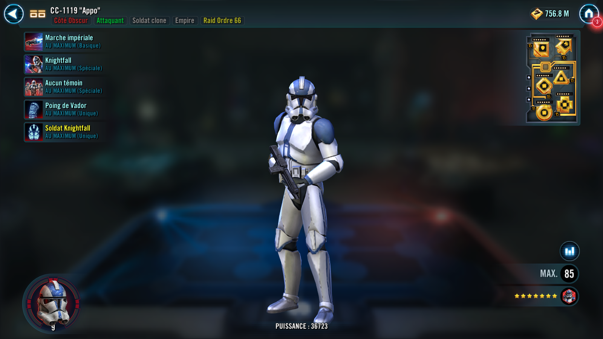
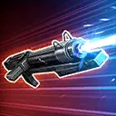
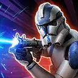
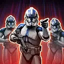

Deal Physical damage to target enemy and grant Defense Penetration Up for 2 turns to the strongest ally that didn't already have it. During Appo's turn, call all other Attacker allies with Defense Penetration Up to assist.

Dispel all buffs on all enemies. Deal Physical damage to target enemy and Stun them for 1 turn. Appo and Knightfall Trooper gain Critical Damage Up for 2 turns, then call a random Dark Side Clone Trooper Support ally to assist. The ally that assists Stealths at the end of Appo's turn for 1 turn.

Deal Physical damage and trigger all stacks of Damage Over Time on all enemies. Knightfall Trooper assists and gains Advantage for 2 turns. If Lord Vader is in the allied Leader slot and the target enemy has 8 or more stacks of Damage Over Time, inflict Order 66 on the target enemy for 2 turns, which can't be copied, dispelled, evaded, or resisted.
Order 66: Immune to buffs and can't be revived if defeated
Dark Side Clone Trooper allies gain 5 Speed for each enemy (excluding summons) at the start of battle, doubled for each Jedi and Light Side Unaligned Force User enemy, and if all allies are Empire, summon a Knightfall Trooper into the ally slot. While an allied Knightfall Trooper is active, Appo has +50% Offense.
Whenever an enemy is defeated, reduce the cooldown of No Witnesses by 1. At the start of his turn, Appo dispels Foresight on all enemies. Enemies who had Foresight dispelled this way are Exposed for 2 turns.
At the start of encounter, if the ally in the Leader slot is Lord Vader and all other allies are Dark Side Clone Troopers, and there are no enemy Galactic Legends: Appo gains Coruscant Commander until the first time he is defeated, until the end of battle.
If the ally in the Leader slot is Lord Vader and all other allies are Dark Side Clone Troopers:
- At the start of battle, Appo recovers 100% Health and Protection
- At the start of encounter, allied Lord Vader and Dark Side Clone Trooper allies gain Dramatic Entrance for 2 turns, which can't be dispelled
- Appo gains 3 stacks of Operation Knightfall, which can't be dispelled or prevented
Omicron Boost : While in Territory Battles: At the start of battle, Appo gains 50% Max Health, Max Protection, and Tenacity. At the start of encounter, inflict Order 66 on all enemies for 2 turns, which can't be copied, dispelled, evaded, or resisted.
Whenever Appo scores a critical hit, he gains 25% Offense (stacking) for the rest of encounter.
Whenever Knightfall Trooper is defeated, inflict Deathmark on the strongest enemy for 1 turn. At the start of his turn, if an enemy is Disarmed, inflict 2 stacks of Damage Over Time on all enemies for 1 turn.
While Appo has Dramatic Entrance, whenever he deals damage to target enemy, they are Stunned for 1 turn, which can't be evaded or resisted.
Coruscant Commander: This character can't be defeated if there is an active ally Lord Vader
Operation Knightfall: When Knightfall Trooper is defeated, remove 1 stack of Operation Knightfall from Appo and summon a Knightfall Trooper
Dramatic Entrance: +25% Offense; deal bonus True damage equal to 10% of the target's Max Health, which can't be evaded; gain 20% Turn Meter and Dramatic Entrance for 2 turns if this unit defeats an enemy
Dark Side, Attacker, Clone Trooper, Empire
[Basic] Imperial March: Deal Physical damage to target enemy and grant Defense Penetration Up to the strongest ally that didn't already have it for 2 turns. During Knightfall Trooper's turn, call all other Attacker allies with Defense Penetration Up to assist.
[Special] Defender of the Empire: Call a random Dark Side Clone Trooper Support ally to assist and they Stealth for 1 turn, then deal Physical damage to target enemy. Appo and Knightfall Trooper gain Advantage for 1 turn.
[Unique] Batallion Brothers: Whenever Knightfall Trooper uses an ability, he gains 20% Offense (stacking), doubled if he scores a critical hit until the end of encounter.
Omicron Boost : While in Territory Battles and the Omicron upgrade to Appo's Vaders Fist Unique ability is applied: Appo gains an additional 3 stacks of Operation Knightfall, which can't be dispelled or prevented.
[Unique] Summoned: This unit's stats scale with the summoner's stats. This unit can only be summoned to the ally slot if it's available. This unit can't be summoned in certain raids. This unit can't be revived. If an effect counts defeated units, this unit doesn't count. When there are no other allied combatants, this unit escapes from battle. A unit can't be revived if this summoned unit exists in their slot.